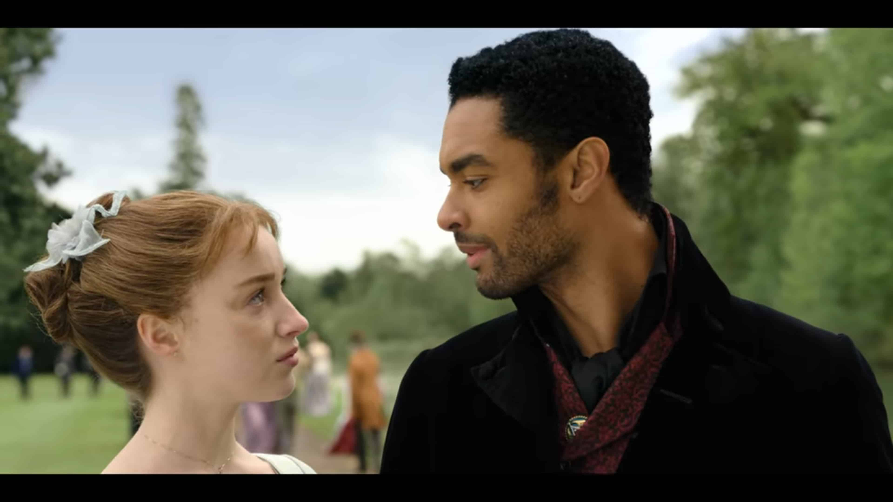
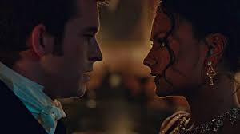
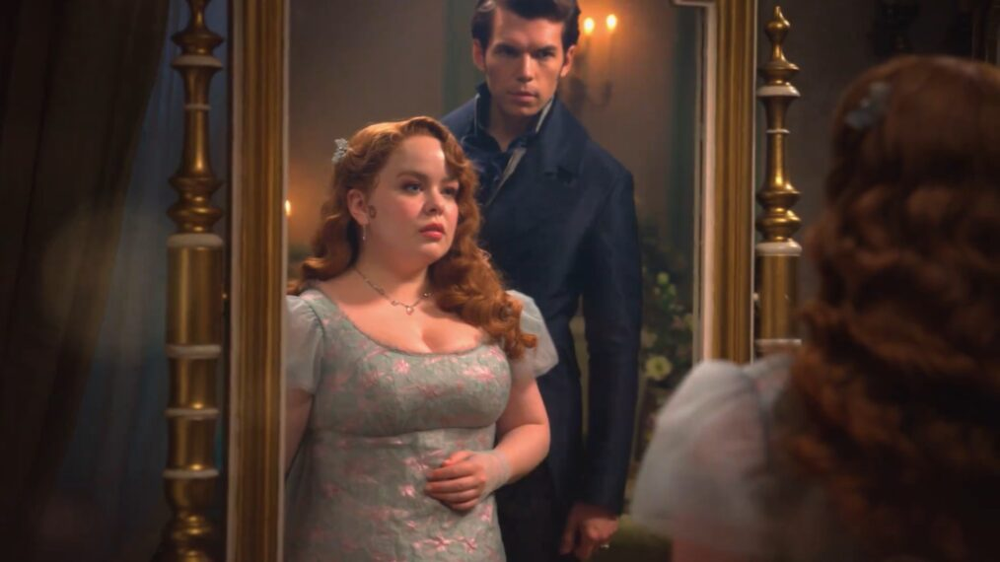
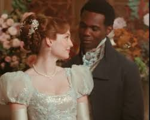

La historia de Simon Basset (Duque de Hastings) y Daphne Bridgerton en
Bridgerton es un romance de "falso noviazgo a amor verdadero" . Para evitar pretendientes
indeseados y la presión matrimonial, fingen un cortejo que termina en un amor profundo, matrimonio, conflictos
por el deseo de tener hijos y, finalmente, una familia feliz

El vizconde que me amó
Anthony, el primogénito, quien busca esposa por deber y no por amor, fijándose en Edwina Sharma. Sin embargo, se siente fatalmente atraído por la hermana mayor de esta, Kate, una mujer independiente y protectora. Tras un intenso conflicto entre el deseo y el honor, y tras un accidentado intento de boda con Edwina, Anthony y Kate superan sus miedos al compromiso y se casan, viviendo un amor intenso y apasionado.

Colin Bridgerton, el tercer hijo de la familia, es un joven encantador y despreocupado que disfruta de la vida sin ataduras. Sin embargo, su perspectiva cambia cuando conoce a Penelope Featherington, una amiga de la infancia que siempre ha estado enamorada de él en secreto. A medida que pasan tiempo juntos, Colin comienza a ver a Penelope bajo una nueva luz, descubriendo su inteligencia y bondad. A pesar de las dudas iniciales, Colin se da cuenta de que sus sentimientos por Penelope son genuinos y profundos. La novela sigue su viaje desde la amistad hasta el amor, culminando en una relación sincera y comprometida.

Te doy mi corazón
Benedict Bridgerton, el segundo hijo de la familia, es un hombre apasionado por el arte y la literatura, pero también es conocido por su naturaleza romántica y su tendencia a enamorarse fácilmente. Su vida da un giro inesperado cuando conoce a Sophie Beckett, una joven que trabaja como sirvienta en la casa de su familia. A pesar de las diferencias sociales y los obstáculos que enfrentan, Benedict y Sophie desarrollan una conexión profunda basada en la comprensión mutua y el respeto. La novela narra su lucha contra las convenciones sociales y los prejuicios, mientras descubren un amor verdadero que desafía las expectativas de la sociedad.
El corazón de una Bridgerton
La historia de Francesca y lord kilmatin, el cuarto hijo de la familia Bridgerton, es un relato de amor y autodescubrimiento. Francesca, una mujer inteligente y reservada, ha vivido bajo la sombra de sus hermanos mayores y las expectativas sociales. Sin embargo, su vida cambia cuando conoce a lord kilmartin, un hombre enigmático y atractivo que desafía las normas de la sociedad. A medida que Francesca y lord kilmartin se acercan, ambos deben confrontar sus propios miedos y prejuicios. La novela explora temas de identidad, aceptación y el poder del amor para transformar vidas, culminando en una relación que desafía las convenciones y celebra la individualidad.
